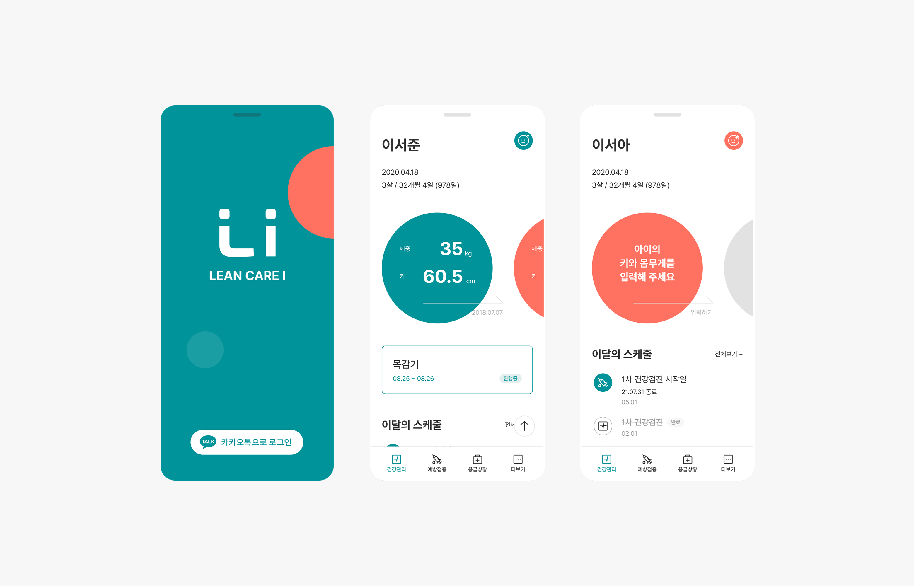
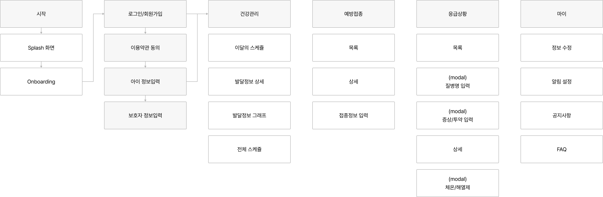
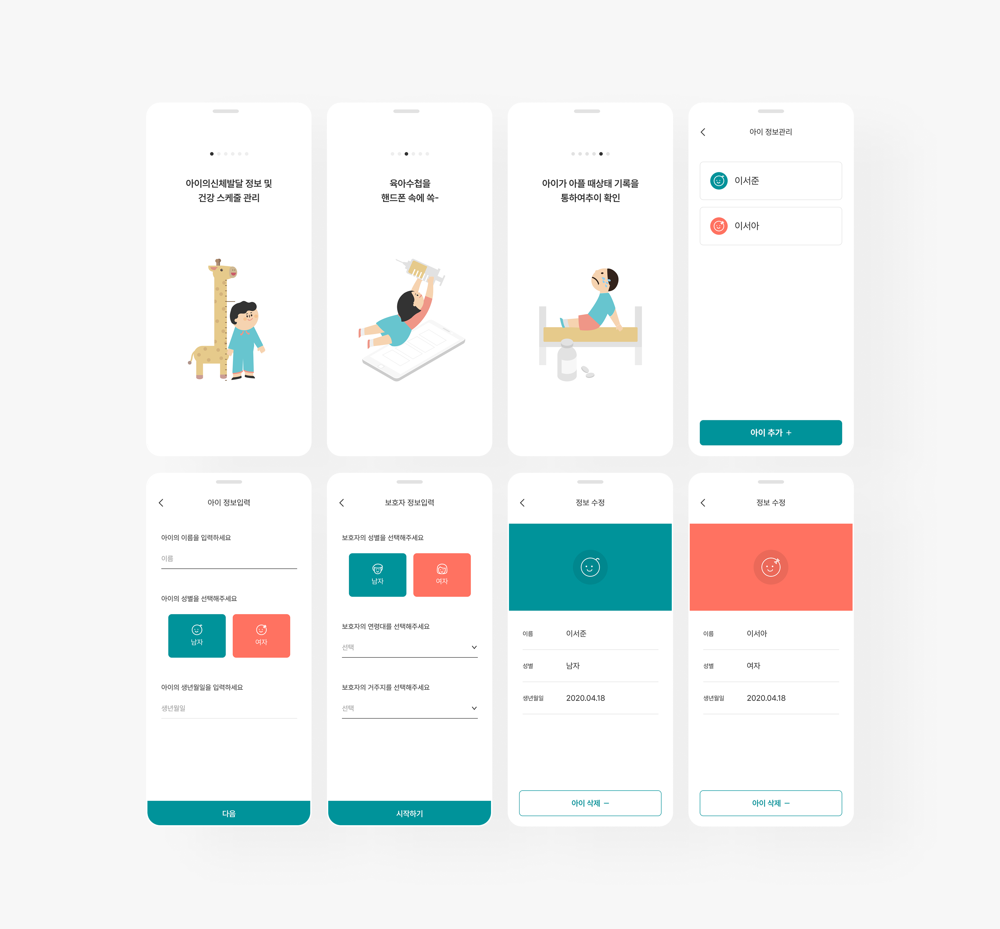
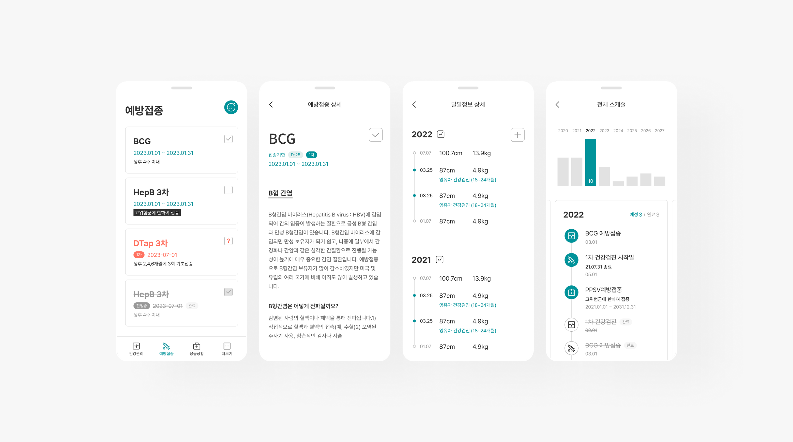
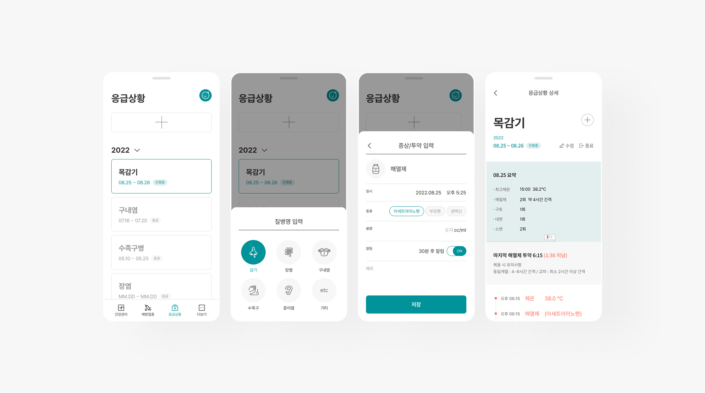

린 케어 아이
사용자 보호자(부모), 의료/보건 전문가를 타겟으로 하여 아동의 건강 및 신체 발달 정보를 관리하는 목적으로 설계된 헬스케어 기반 앱
아이의 신체 발달 기록, 예방접종 일정, 건강 상태 기록 및 시각화
아이 건강/발달 정보 관리의 효율적이고 부모 사용자 중심의 직관적이고 감성적인 UI UX 구현

현안 → 전략
01
데이터 관리의 어려움
부모가 아이의 미묘한 건강 변화를 실시간으로 파악하기 어렵고,
발열·부정맥·활동량 저하 등 초기 신호를 놓칠 위험이 큼
데이터 통합 플랫폼 제공
ECG·혈압·체온·활동량 등 주요 건강 지표를 하나의 앱에
자동 수집·저장하고 기기 연동으로 실시간 업데이트
02
아이 건강 이상 징후 발견 지연
데이터를 기록하더라도 이상 수치를 실시간 알림으로 알려주지 않아
대응이 늦어질 수 있음
실시간 알림 및 위험 감지 기능
정상 범위를 벗어난 측정값 발생 시 즉시 알림 전송
03
의료진과의 정보 공유 비효율
종이·메모·개별 기기 앱 등 분산된 기록 방식으로
의사에게 정확한 데이터를 전달하기 힘듦
성장 맞춤형 건강 리포트
주간·월간 리포트로 건강 추세를 시각화,
그래프와 PDF로 진료 시 바로 공유
04
부모의 불안감
갑작스러운 아이의 건강 이상 상황에 즉각 대응하기 어렵고
정보 부족으로 불안감 증대
심플한 UI/UX 설계
핵심 지표를 직관적 차트로 표시,
측정→확인→저장→공유의 단계별 프로세스로 안심감 제공
퍼소나 & 여정
김부모 · 38세, 워킹맘
초등학교 2학년 아이를 둔 직장인 엄마. 평소 아이가 잦은 감기나 체온 변화에 예민하게 반응해 아이 건강에 민감한 편
그래서, 김부모의 여정은 이렇게 이어집니다
아이 상태 확인
등원 전 체온·심박수 체크 →
정상 범위면 안심 메시지 수신
이상 신호 발생
발열 알림 수신 →
응급 대처 가이드와 가까운 병원 정보 즉시 연결
의료진 공유
자동 생성된 리포트를 진료 시 의사에게 공유 →
정확한 데이터로 빠른 진단
성장 추세 추적
체중·활동량·심박수 추이를 리포트로 한눈에 확인

디자인 무드보드
Color
주요 색상
청록·민트 계열 → 신뢰, 안정, 청결감, 아이 친화적인 부드러운 이미지
보조 색상
따뜻한 오렌지·옐로우 → 성장, 활기, 긍정적인 에너지 표현
코랄·레드 계열 → 위험 알림, 경고 시 직관적 인지 가능
톤 앤 매너
전체적으로 밝고 소프트한 파스텔 톤 → 부모와 아이 모두에게 친근감
경고/위험 알림은 강한 대비 컬러(레드, 다크 그레이) 적용 → 빠른 주목성
감성적 디자인 요소
일러스트/아이콘
아이 친화적으로 심장, 체온계, 활동 캐릭터 등을 단순화·귀엽게 표현
안심 메시지
"오늘은 건강 수치가 안정적이에요" 같은 문구로 부모 불안 완화
가족 중심 UX
여러 자녀 프로필 관리 가능, 아이별 데이터 컬러 태깅

Highlight 01 · 예방접종 관리
연령별로 갈아끼우는, 필수접종 안내 슬라이더
연령별 슬라이더로 시기별 필수접종을 안내하고, 접종 상태(예정·완료·주의)를 컬러로 즉시 구분. 좌우 스와이프로 연령대를 자연스럽게 탐색

Highlight 02 · 응급상황 기록
증상부터 투약까지, 시간순으로 남는 기록
증상·투약·메모를 시간별로 상세 기록하고 복용 알람까지 설정. 병명은 아이콘 선택지로 빠르게 골라 양육자의 기록 부담을 줄임

결과
건강 지표를 하나의 대시보드로 통합, 실시간 알림으로 이상 신호 포착
성장 리포트와 심플한 UI로 부모의 불안까지 함께 완화
01 · 데이터 관리의 어려움
데이터 통합 플랫폼으로 해결
02 · 이상 징후 발견 지연
실시간 알림 및 위험 감지로 해결
03 · 정보 공유 비효율
성장 맞춤형 리포트로 해결
04 · 부모의 불안감
심플한 UI/UX 설계로 해결